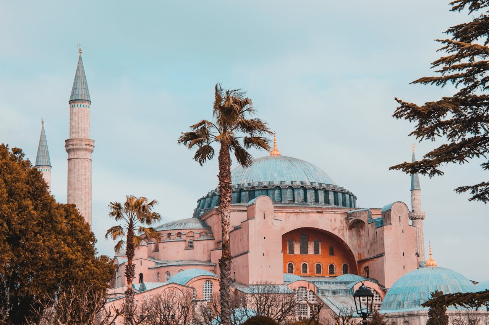
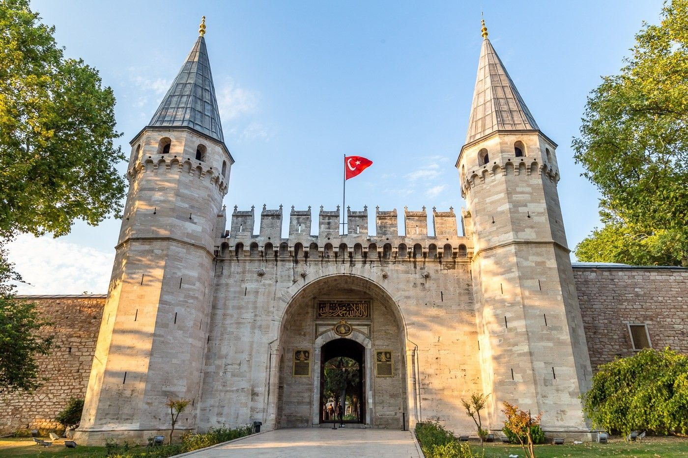

İstanbul'un en ikonik yapılarından biri olan Ayasofya, tarih boyunca kilise, cami ve müze olarak hizmet vermiştir. İlk olarak 537 yılında Bizans İmparatoru I. Justinianus tarafından kilise olarak inşa edilmiştir.
Mimarisindeki eşsiz kubbesi ve iç mekanındaki muazzam mozaikler, onu Bizans döneminin en önemli yapılarından biri yapmaktadır. 1453 yılında İstanbul'un fethiyle birlikte camiye dönüştürülmüş, 1935 yılında ise müze olarak kullanılmaya başlanmıştır. 2020 yılında yeniden cami olarak kullanılmaya başlanan Ayasofya, hem tarihi hem de mimari açıdan dünya çapında bir kültürel mirastır. Ziyaretçilerine tarih boyunca farklı inanışların ve kültürlerin izlerini sunan bu eşsiz yapı, İstanbul'un zengin tarihini gözler önüne sermektedir.
İstanbul'un tarihi yarımadasında, Boğaziçi ve Haliç'in birleştiği noktada bulunan Topkapı Sarayı, Osmanlı İmparatorluğu'nun kalbinin attığı yerdir.
15. yüzyılın ortalarında Fatih Sultan Mehmet tarafından inşa edilen saray, 400 yıl boyunca Osmanlı padişahlarının ikametgâhı ve devlet işlerinin merkezi olmuştur. Saray, geniş avluları, zarif köşkleri ve büyüleyici bahçeleriyle ünlüdür. Topkapı Sarayı'nın en dikkat çekici bölümleri arasında Harem Dairesi, Kutsal Emanetler Dairesi ve Padişahın özel hazineleri yer almaktadır. Osmanlı İmparatorluğu'nun kültürel ve tarihi mirasını yansıtan bu muazzam yapı, günümüzde bir müze olarak ziyaretçilere açıktır. Saray, her köşesinde Osmanlı tarihinin ve sanatının izlerini taşıyan eşsiz bir kültürel hazinedir.